Molding and Casting
CNC Milling Wax Positive
Import your STL file into Aspire and configure the tool paths for the Shop Bot.
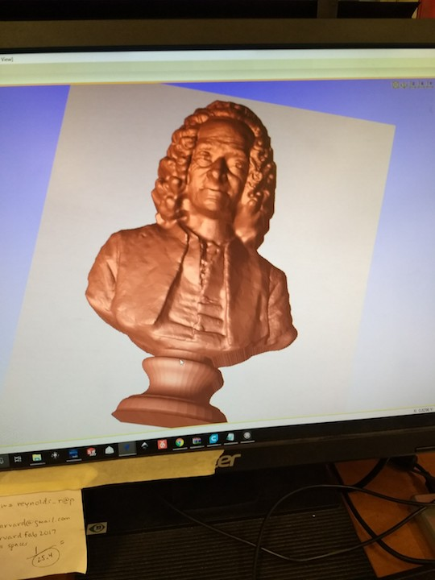
Using a coarse end mill, the Shop Bot performs the initial rough cut into the block of wax
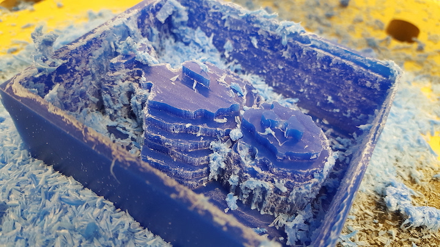
A finer end mill makes a much smoother finishing pass on the block of wax.
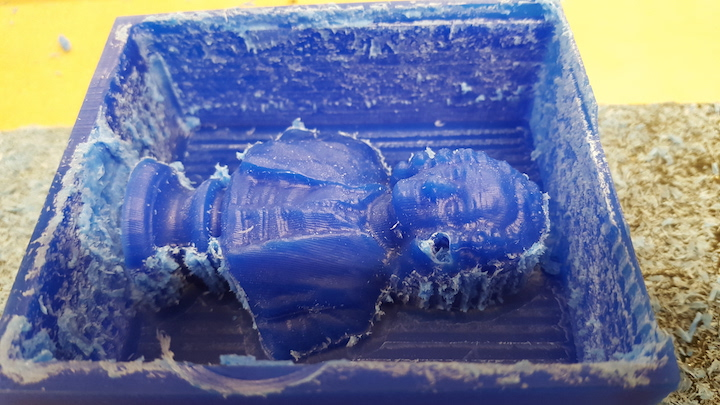
A mold mixture is poured onto the wax positive. Once the mold is cured, it can be extracted and used for casting resin, hydrostone, low melting point metals, or chocolate (if your mold is food safe).
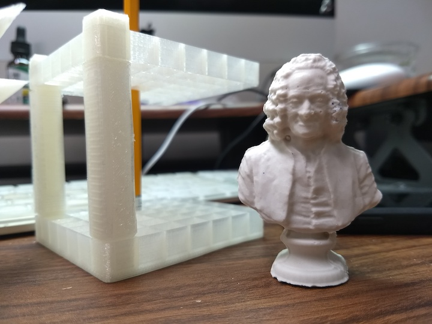
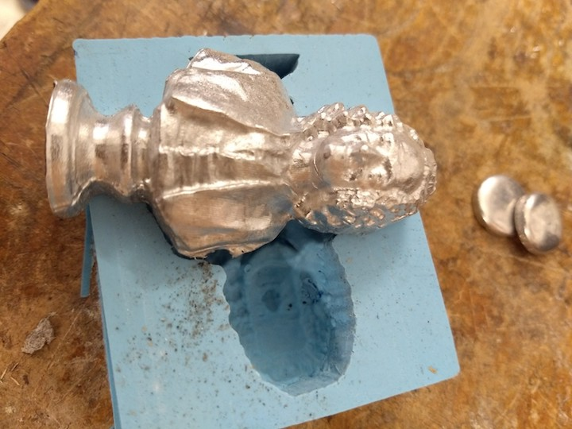
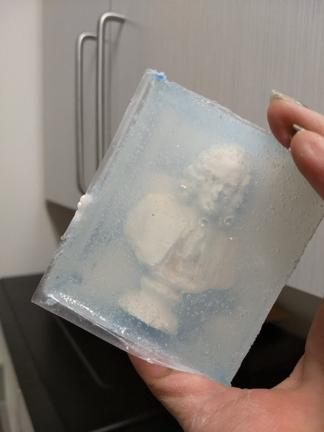
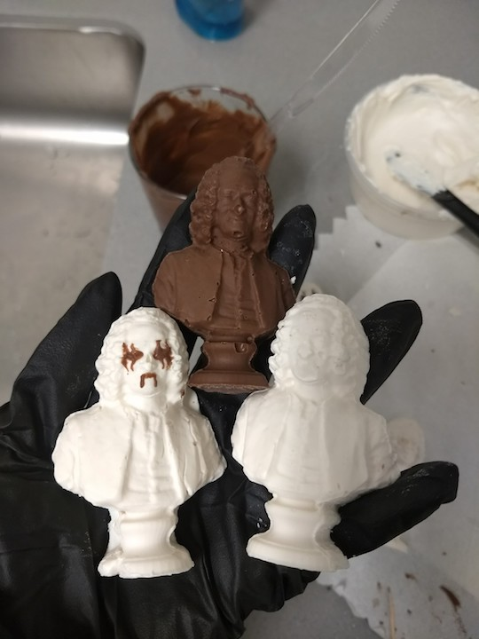
Casting Body Parts
You can use alginate molds to cast body parts. Note, the molds are very fragile and have a limited number of uses before they disintegrate.
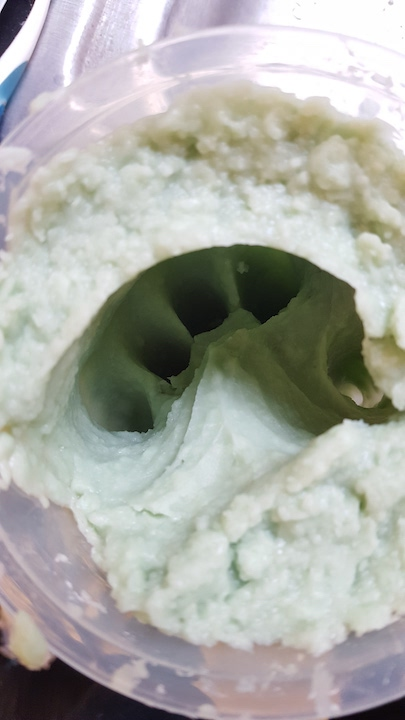
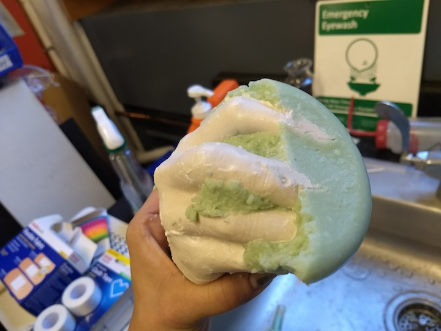
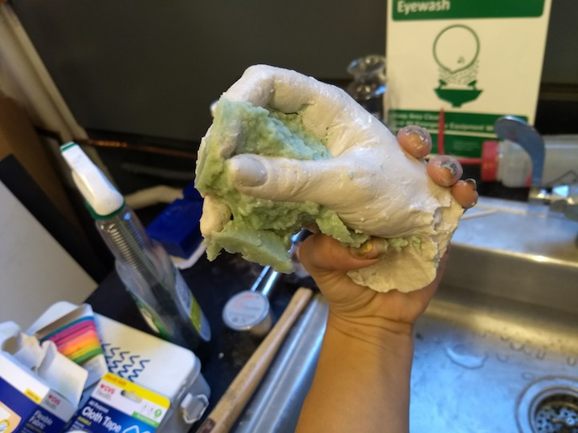
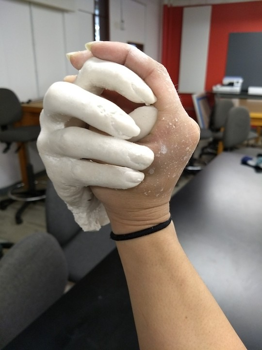
Two Part Molds
Import your STL file into Aspire and configure the tool paths for the Shop Bot.